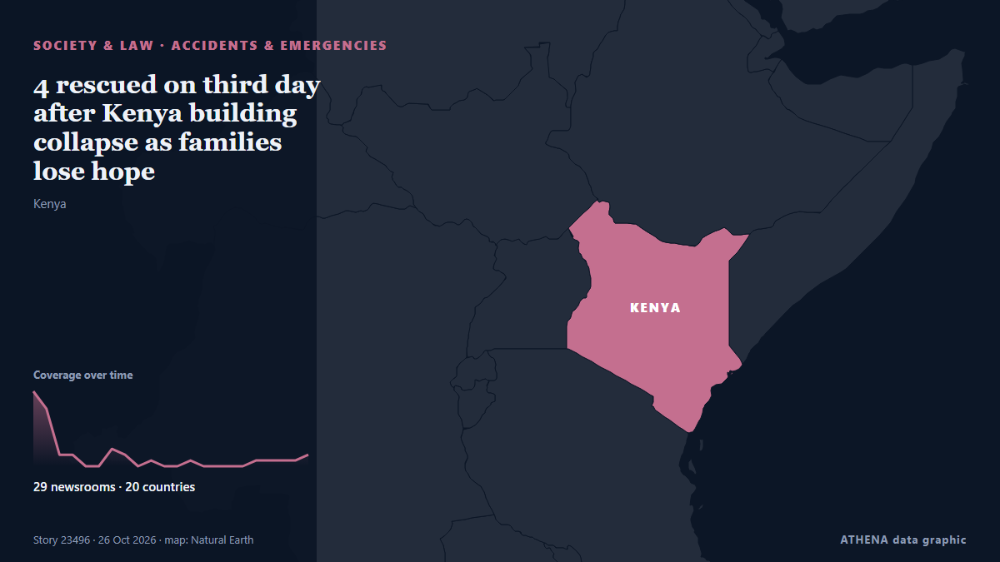

4 rescued on third day after Kenya building collapse as families lose hope

The number of people rescued from a collapsed building in Kenya has risen to four, while several others remain missing and are reported to have communicated with loved ones from beneath the rubble. από ABC News (International)
Αναφέρθηκε ανεξάρτητα από 29 μέσα σε 20 χώρες από τις 23 Οκτ, πρώτο από το Capital FM· η κάλυψη έχει πλέον ηρεμήσει. Το ATHENA εκτιμά τον κίνδυνο αυξημένο (4.6/10), κυρίως λόγω της σοβαρότητας της βλάβης που περιγράφεται και της γεωγραφικής και τομεακής εμβέλειάς του. Η βεβαιότητα είναι 91% (υψηλή), καθώς το επιβεβαιώνουν 29 ανεξάρτητα μέσα με μέση αξιοπιστία πηγών 76%. Ποιοι το ανέφεραν: 6 μέσα στη χώρα Κένυα · Kenya, 5 μέσα στη χώρα Κίνα · China, 3 μέσα στη χώρα Γαλλία · France. Η κάλυψη διήρκεσε από 23 Οκτ έως 26 Οκτ, 66 ώρες.
Γιατί έχει σημασία: Οι νομικές αλλαγές και οι αλλαγές πολιτικής μεταβάλλουν δικαιώματα, υποχρεώσεις και δημόσιες υπηρεσίες για όσους αφορούν.
Τι άλλαξε: 6 νέες αναφορές από 6 μέσα στο 24ωρο έως 26 Οκτ.
Πρώτη διατύπωση: Multi-Storey Building Collapses During Construction in Kenya's Nairobi; Many Feared Trapped
Οι τίτλοι των ειδήσεων παρουσιάζονται στα αγγλικά, όπως δημοσιεύτηκαν.
Με μια ματιά
Επιλέγεται, βαθμολογείται και γράφεται από τη δημοσιευμένη μεθοδολογία του ATHENA. Κανένας συντάκτης δεν παρεμβαίνει σε μεμονωμένα γεγονότα. Πώς παράγεται ›
| 23 Oct 11:12 UTC | 13 |
|---|---|
| 23 Oct 14:12 UTC | 10 |
| 23 Oct 17:12 UTC | 2 |
| 23 Oct 20:12 UTC | 2 |
| 23 Oct 23:12 UTC | 0 |
| 24 Oct 02:12 UTC | 0 |
| 24 Oct 05:12 UTC | 3 |
| 24 Oct 08:12 UTC | 2 |
| 24 Oct 11:12 UTC | 0 |
| 24 Oct 14:12 UTC | 1 |
| 24 Oct 17:12 UTC | 0 |
| 24 Oct 20:12 UTC | 0 |
| 24 Oct 23:12 UTC | 1 |
| 25 Oct 02:12 UTC | 0 |
| 25 Oct 05:12 UTC | 0 |
| 25 Oct 08:12 UTC | 0 |
| 25 Oct 11:12 UTC | 0 |
| 25 Oct 14:12 UTC | 1 |
| 25 Oct 17:12 UTC | 1 |
| 25 Oct 20:12 UTC | 1 |
| 25 Oct 23:12 UTC | 1 |
| 26 Oct 02:12 UTC | 2 |
| 23 Oct 07:26 UTC | 4.6 |
|---|---|
| 23 Oct 08:47 UTC | 5.6 |
| 23 Oct 18:11 UTC | 6.7 |
| 23 Oct 21:20 UTC | 7.0 |
| 24 Oct 07:12 UTC | 6.3 |
| 24 Oct 08:08 UTC | 7.0 |
| 26 Oct 12:07 UTC | 6.6 |
| 30 Oct 12:05 UTC | 4.6 |
| 30 Oct 12:05 UTC | 4.6 |
Γιατί αυτοί οι αριθμοί
Σημασία
Κίνδυνος
Βεβαιότητα
Η κάλυψη — ποιος το ανέφερε και πότε
ο τίτλος όπως δημοσιεύτηκε · ανοίγει το πρωτότυπο- Capital FM · Κένυα · KenyaSeveral trapped after building collapse in Eastleigh
- Xinhua (English) — page reader · Κίνα · ChinaUrgent: Several feared trapped after 18-story building collapses in Kenya
- Capital FM · Κένυα · KenyaPolice lob teargas to clear crowds as Emergency Crews Respond to Eastleigh Building Collapse
- Arab News · Σαουδική Αραβία · Saudi ArabiaCasualties feared as multi-story building collapses in Nairobi: media
- Africanews (English) · AFRNairobi building collapse raises safety concerns as rescuers search rubble
- Vanguard · Νιγηρία · NigeriaCasualties feared as multi-storey building collapses in Nairobi
- KBC · Κένυα · KenyaMulti-storey building collapses in Eastleigh, several people feared trapped
- The Straits Times · Σιγκαπούρη · SingaporeBuilding collapses in Kenyan capital, rescuers on the scene
- RFI English · Γαλλία · FranceCasualties feared as multi-storey building collapses in Nairobi
- Daily News · Τανζανία · TanzaniaBuilding collapse in Nairobi, several feared trapped
- Channels TV · Νιγηρία · NigeriaCasualties Feared As Multi-Storey Building Collapses In Nairobi
- ABC News (International) · Ηνωμένες Πολιτείες · United StatesMany feared trapped as a tall building collapses in Kenya
- DW English · Γερμανία · GermanyMany feared trapped under collapsed building in Nairobi
- Euronews English · Γαλλία · FranceKenya: huge piles of rubble after high-rise building collapses
- Capital FM · Κένυα · KenyaEastleigh Collapse: Woman Pulled from Rubble as Search for Other Survivors Continues
- SABC News · Νότια Αφρική · South AfricaBuilding collapses in Kenyan capital, rescuers on the scene
- Xinhua (English) — page reader · Κίνα · China1 rescued after building collapse in Kenya's Nairobi
- Oman Observer · Ομάν · OmanNAIROBI
- Arab Times · Κουβέιτ · KuwaitMulti-Storey Building Collapses During Construction in Kenya's Nairobi; Many Feared Trapped
- The Korea Times · Νότια Κορέα · South KoreaMany feared trapped as a tall building collapses in Kenya
- The New Arab · INTCasualties feared as multi-storey building collapses in Nairobi
- The Standard · Κένυα · KenyaSeveral feared trapped in Eastleigh building collapse
- Al Jazeera English · Κατάρ · QatarMany feared trapped after Kenya building collapse
- Al Jazeera English · Κατάρ · QatarSeveral people missing after multistorey building collapses in Kenya
- NDTV · Ινδία · IndiaMany Feared Trapped As Multi-Storey Building Collapses In Kenya
- France 24 English · Γαλλία · FranceBuilding collapse in Nairobi search for survivors under way
- Stuff · Νέα Ζηλανδία · New ZealandDramatic video shows the moment tower pancakes in Kenya. Many are feared trapped
- Africanews (English) · AFRPolice dispel crowds with tear gas after 16-storey building collapses in Nairobi
- NewZimbabwe · Ζιμπάμπουε · ZimbabweSeveral people missing after multistorey building collapses in Kenya
- Mehr News (English) · Ιράν · IranVIDEO: Moment when an 18-story building collapses in Kenya
- Capital FM · Κένυα · KenyaSeven Missing After Eastleigh Building Collapse as Rescue Teams Race to Reach Trapped People
- BBC News · Ηνωμένο Βασίλειο · United KingdomTwo rescued after Nairobi building collapse with five still missing
- ABC News (International) · Ηνωμένες Πολιτείες · United States1 person rescued from collapsed building in Kenya as others remain missing
- Xinhua (English) — page reader · Κίνα · ChinaKenya searches for 7 missing people after Nairobi building collapse
- Xinhua (English) — page reader · Κίνα · ChinaChinese firm's machinery aids rescue effort at Nairobi building collapse
- ABC News (International) · Ηνωμένες Πολιτείες · United States4 rescued on third day after Kenya building collapse as families lose hope
- Arab News · Σαουδική Αραβία · Saudi Arabia4 rescued on third day after Kenya building collapse as families lose hope
- MyJoyOnline · Γκάνα · GhanaTwo rescued after Nairobi building collapse, with five still missing
- China Daily — page reader · Κίνα · ChinaTwo rescued from collapsed Nairobi building as search continues for missing
- AllAfrica · AFRKenya: Eastleigh Building Collapse - Trapped Man Rescued After Hours of Search, Taken to KNH